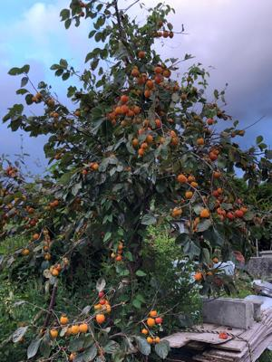
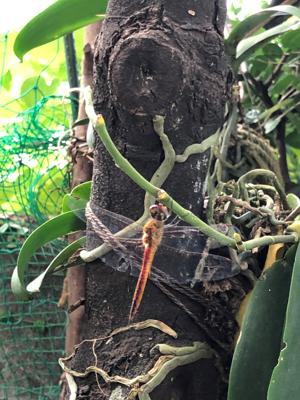
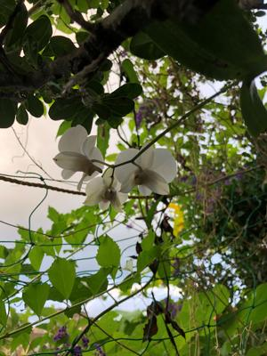

うるがいの話 ある日
最新: 残暑
うるがいとは 前提知識です
カニの画像をクリックすると『うるがいの話』サイトを表示します
うるがい(ｳﾙｶﾞｲ urugai)とは、『もずくがに』の名前でとても大きくなります。
たながー（ﾀﾅｶﾞｰtanagaa）とは手長えびのことで、何種類かあり大きいのは車 エビぐらいになります。
ぶながー(bunagaa)とは、赤い髪の毛、赤い身体、そして身長は１ｍ２０ｃｍ ぐらい、川の蟹を食べているの目撃された。場所は沖縄県国頭郡大宜味村のと ある村僕の隣近所に住んでいる爺さんから、聞いた話です。
2021年09月09日 (木）
残暑
16:45



秋の気配は感じるものの、暑い。緊急事態宣言は９月末に延長すると報道して
いる。新規感染者が減ってきているとは言え、昨日は４１３人、今日は３３６
人と凄い数値である。学校は分散登校で、午前と午後に入れ替わる動きが見え
る。多感な頃にとんでもない事にあって気の毒である。毎日サンデーは、衝動
買いしてしまった『ギター・ソロビートルズの名曲あつめました』（７月２８
日に配達された）の本のイエスタデイの楽譜をソフトでの演奏にひたすら、挑
戦し続け、先ほど一応の目標を達成する。とんでもない本だった！、玄人がし
か分からない本！、そうそうこのプロセスが大事なのである。還暦を過ぎてギ
ターを再び弾き始め、１０歳レベルのスキルしかないズブの素人に、オープン
ＧチューニングしたＴＡＢが分かるか！（オープンＧチューニングとは説明し
ません）。そもそも、イエスタデイが訳アリの曲で、サイトをみるとギターの
標準的なチューニング（弦の調整）１音下げるとある（これでキーの移調と勘
違いする、説明しません）。ネットと戯れ、ユーチューブから曲を捜し続け、
ＰＣ１とＰＣ２で演奏を比較等、悩むことひと月以上やっとやっと、自分の音
楽スキルが無かったことに改めて思い知らされる。分かった事、
ポール・マッ
カートニーが歌う曲
（リンク先が見れる保証はないが）は大体テンポが１０２
、ユーチューブにあったＴＡＢが載っているサイトを元に音楽ソフトに登録、
演奏すると概ね演奏は一致した。衝動買の本は玄人が編曲しまくって（上手い
だろうと言わんばかりに）いたが、模範演奏が収められているＣＤ、大体テン
ポが７０で本の楽譜を登録、演奏させると概ね一致した。なお、これら多くの
それぞれの演奏のキーは同じだった（キーが違たりしたら、トンでもない空間
に行っていたかも）。苦労したおかげで、ユーチューブにあったＴＡＢ情報で
コード（世の中には親切な人（それも上手、たまにゲッ！とするのもあるが）
がいるもんだ）を弾いている、おおお！。では